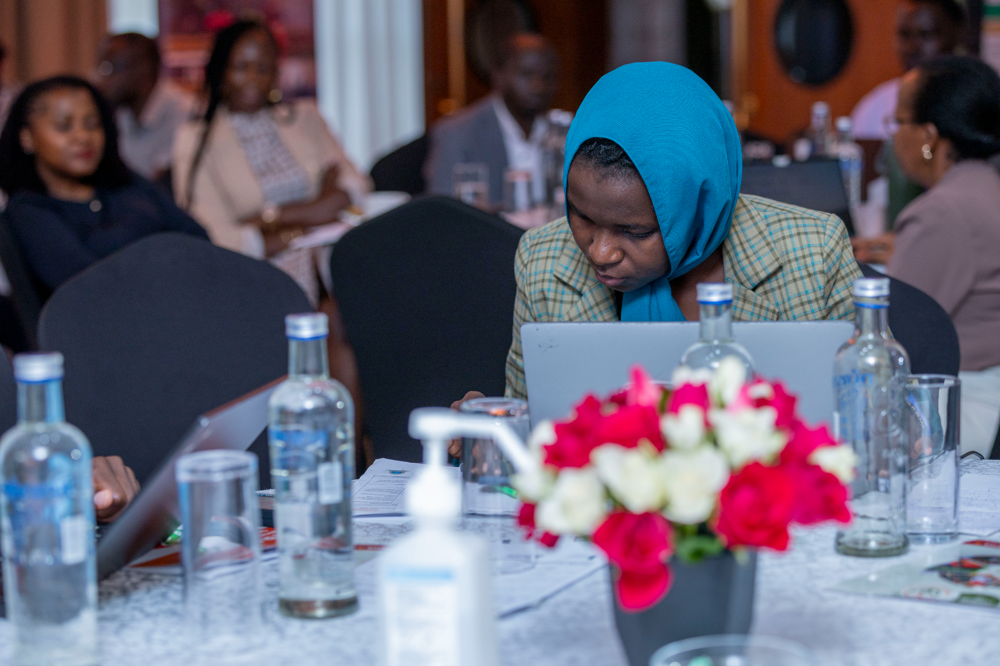
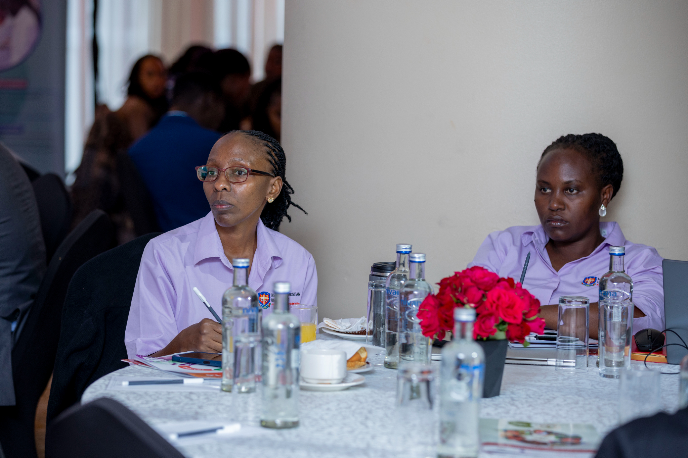
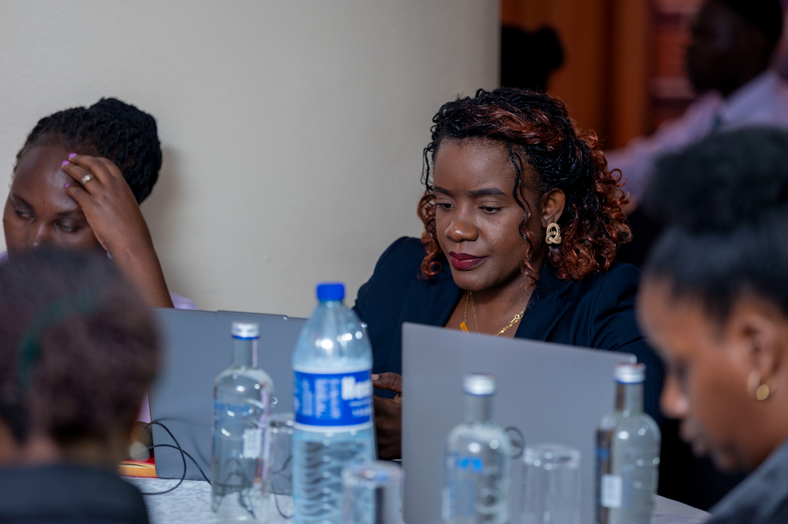
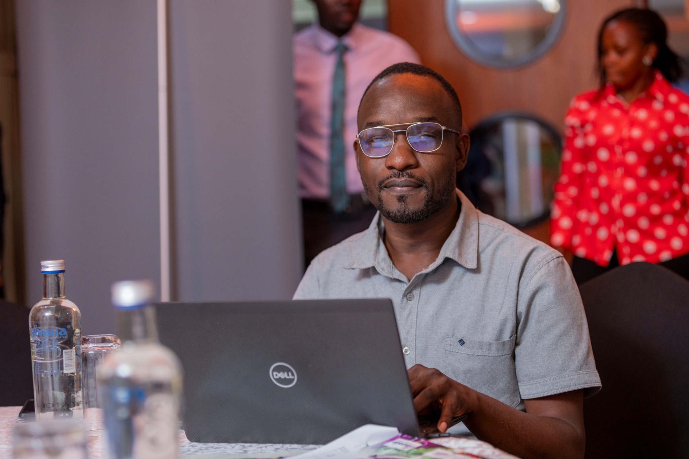

Upcoming & past events.

SUN-ARINU Nutrition Research Forum 2026
Annual research forum bringing together academia, government, and development partners to translate the latest evidence into nutrition programming.

Multi-sectoral Nutrition Programming Training
Three-day capacity building workshop for SUN-ARINU member institutions covering programme design, monitoring, and multi-sectoral coordination.
Uganda Nutrition Summit 2026
National summit convening government, partners, and networks to review nutrition progress and set priorities for the year ahead.

SUN-ARINU Formal Launch at NNF
The official launch of SUN-ARINU during Uganda's National Nutrition Forum, presided over by the Office of the Prime Minister and the Ministry of Education and Sports.

SUN-ARINU Constitution & Formation
Founding assembly that constituted SUN-ARINU as an indigenous SUN chapter, elected the first Executive Council, and adopted the network's constitution.

Strategy 1.0 Development Workshop
Multi-day co-creation workshop that produced the SUN-ARINU Strategy 1.0 (2026–2030), with consultation across government, academia, and development partners.